Editor
Approved application · approved logoEvery image below is an actual canonical PNG. Open an image for its full resolution. These are authored design scenes, not current-app browser captures.
Slash menu · loading
slash-loadingActions and implementation pointers
×
apps/web/src/components/editor/document-toolbar.tsxpackages/better-editor/src/engine/suggestions.tspackages/better-editor/src/ui/context-menu.tsx

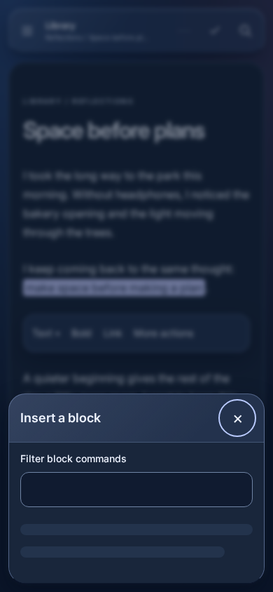
SHA256 5f394e46ae18aeb7e144ccce46f295981251a14a5a26f8bfac3413cef23a2896

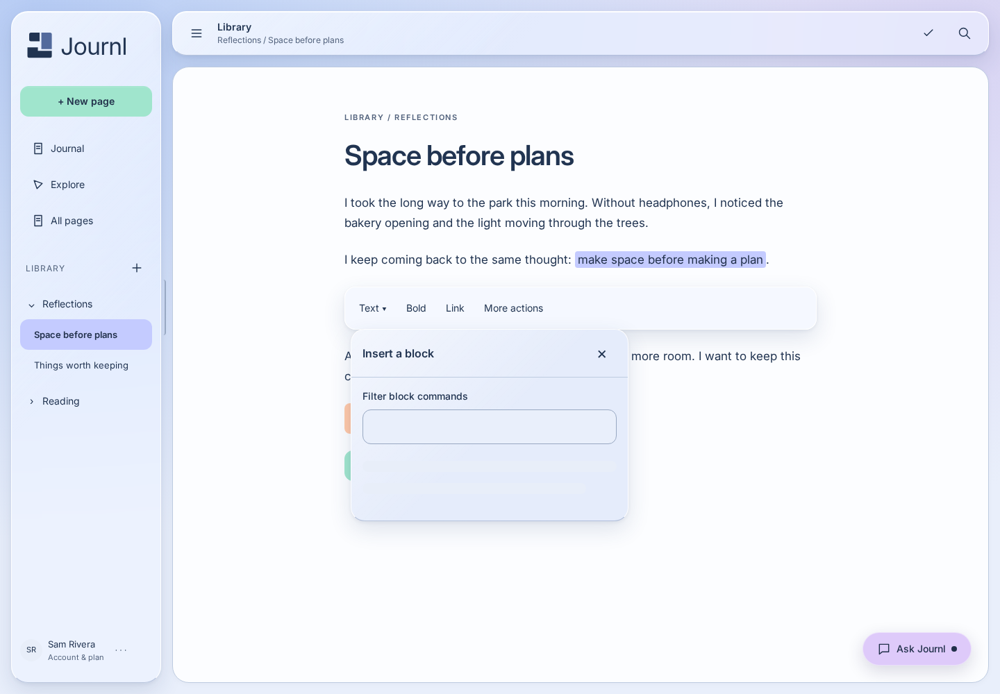
SHA256 02b1ed562abc273c2812c72edc7b152e605e6dfae1b8b9e3761957c079874792

SHA256 e328051c828878ba05cc3ccee9d1d1c38830d4efe3b5be629c51d37e18d34843

SHA256 9bef27fcdb08d5b3f04b7a45f1c4cdac8a2136578e829a415a02f59d20b9226e
Slash menu · error
slash-errorActions and implementation pointers
× · Retry
apps/web/src/components/editor/document-toolbar.tsxpackages/better-editor/src/engine/suggestions.tspackages/better-editor/src/ui/context-menu.tsx

SHA256 11a2e86c97e98dd097e231c3636dfc6227afc261ef8130da9707c41f09f6cc44

SHA256 767a2e0a4231166b801e50fe4e730271215c9658926b6e81ed67b1c00657582a

SHA256 a5d13aa7820dd4841c12367195424a7a497e1ad1a71ea82d03f41fd1124db3ef

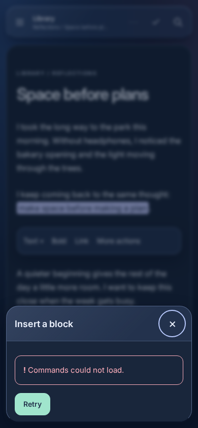
SHA256 26dba830ef0d01040210f254a808d79abd1c0f5855ea77b2ea911bfb2834485f
Slash menu · disabled
slash-disabledActions and implementation pointers
× · Table unavailable in this selection
apps/web/src/components/editor/document-toolbar.tsxpackages/better-editor/src/engine/suggestions.tspackages/better-editor/src/ui/context-menu.tsx

SHA256 16ea3a048eab8df4611546b0923494259ece1d2bd2a38702f9c64c48321b2c85

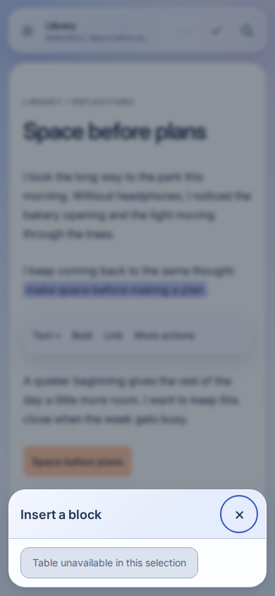
SHA256 e616c9383830a19a651989a1b9ef0050144726b89d5bcdf0c77731d63e53d589

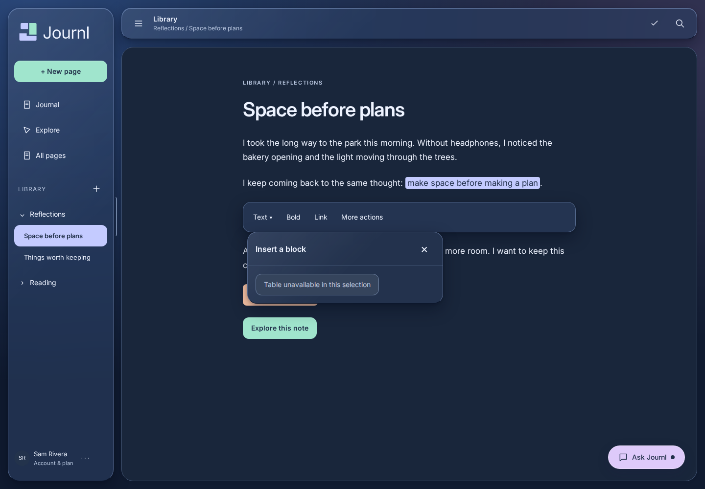
SHA256 2659175896384ba28c38935d93c28ce0c7740a147303a9a727213b6ecf18b3f6

SHA256 d51a3940d787462b440e5add96428dcf631be91d0e10d7ae120b9a30916b43a9
Block actions
block-contextActions and implementation pointers
× · Add block · Indent · Outdent · Duplicate block · Move block up · Move block down · Copy block link · Delete block · Undo · Redo
apps/web/src/components/editor/document-toolbar.tsxpackages/better-editor/src/engine/suggestions.tspackages/better-editor/src/ui/context-menu.tsx

SHA256 88b6bc13b607f6ac1b5f5213ad2de65ec561d446b5610758072c7155a9d748db

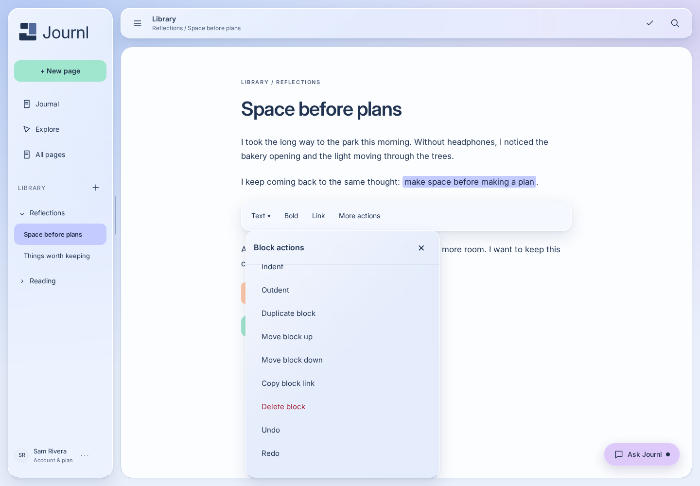
SHA256 d8a2ffc27afa2a205d1764002b95ecd138d6ec531bba6ecd3fee8c0882b3a2e6

SHA256 00b3d17e6cb2966d4188eb9295e90b2573722fc2231f193a07ca61ddfc950a55

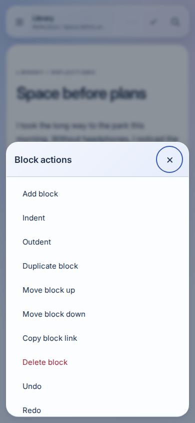
SHA256 fc9330d05c476e10a633eed31e3a1d96b8d66f2571818d04ccd0135fc0b65ad9

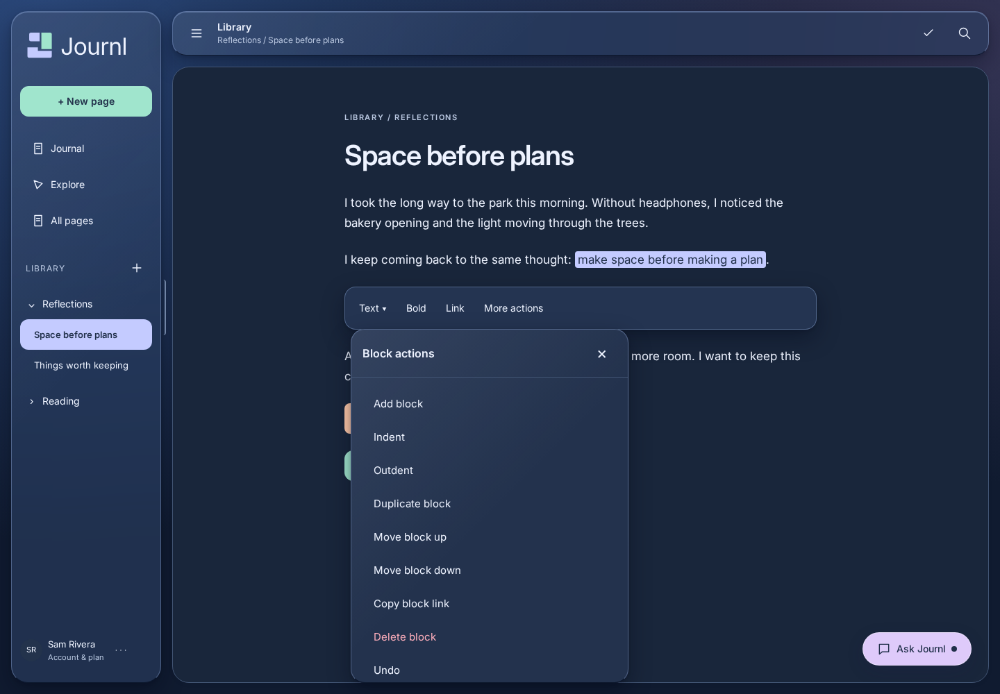
SHA256 a1ca8510e1dedf1ed6f078ca9b4dc5cb3a32af593324dcfe921e1030b68845dd

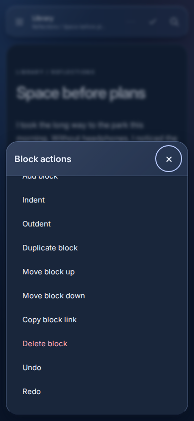
SHA256 4b55cf867d8aa50f6e0aee4211b87fb33429dede4918085eae8b96c63e711ec0

SHA256 0ed5f2aa291b6c1cef6b7ae9b225b4e9e3be3ba062ed1c84ee02e688027d44a9

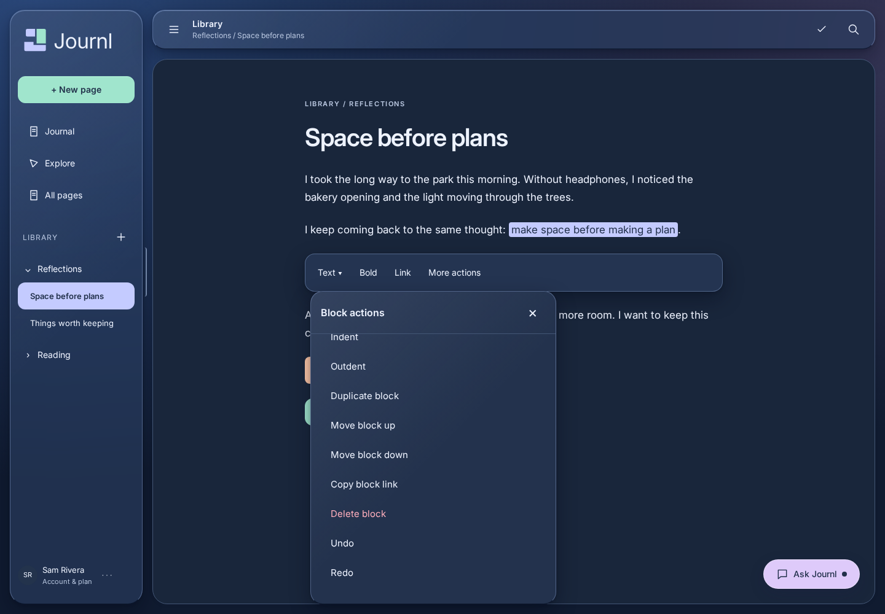
SHA256 6f6ab533171f5f1281a2be40281b5ee9320876b8b3c4f30c195337f9b7c473a4
Block handles
block-handlesActions and implementation pointers
+ New page · Journal · Explore · All pages · ⌄ · Reflections · › · Reading · Add block · Move block · Ask Journl · Today’s Journal · Close · Instant · Thinking
apps/web/src/components/editor/document-toolbar.tsxpackages/better-editor/src/engine/suggestions.tspackages/better-editor/src/ui/context-menu.tsx

SHA256 70e34a4851426755a988e6c565b9968be2d0f309014801bf88eda5ab3d6576c5

SHA256 0c1387653ae6080a6fbfa1042305ea4a5ddc5c57d4ff302e22f473c23a25d121

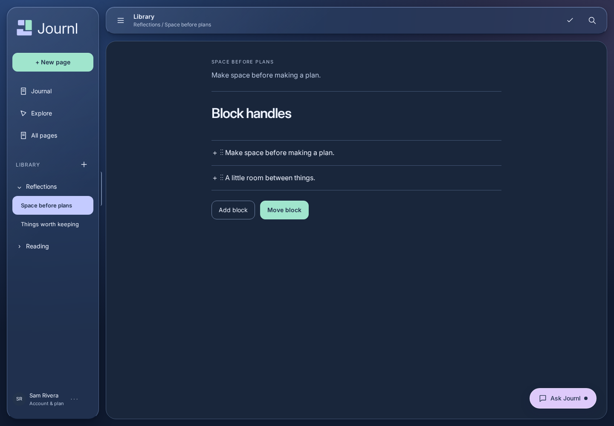
SHA256 f4dfbf5e0892a902db2dea44f141a60ce0799d871404d27e023ca12182615d62

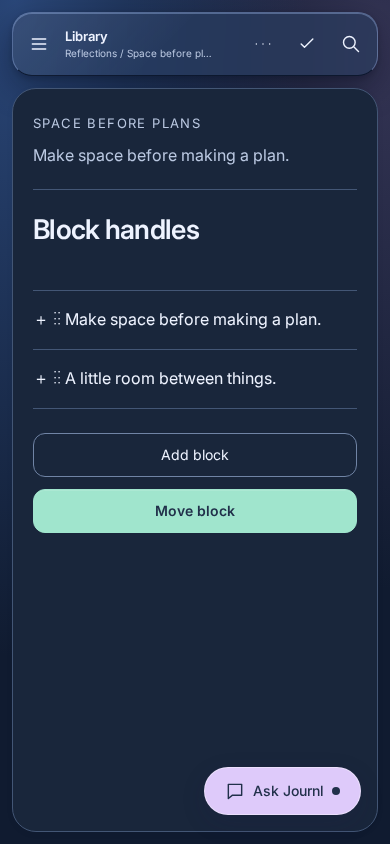
SHA256 252b4b4947acbb391980438a5855d786bc0a6685151854b6c671d335f8c48421
Block action · before
block-action-beforeActions and implementation pointers
+ New page · Journal · Explore · All pages · ⌄ · Reflections · › · Reading · Cancel · Done · Ask Journl · Today’s Journal · Close · Instant · Thinking
apps/web/src/components/editor/document-toolbar.tsxpackages/better-editor/src/engine/suggestions.tspackages/better-editor/src/ui/context-menu.tsx

SHA256 84a099f8efd1c5bd531459dd0638952372699e5f526dabe2e12a72472289bfe4

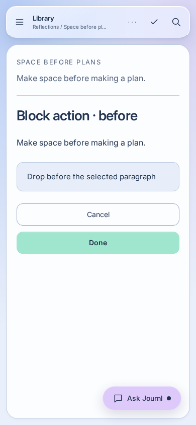
SHA256 9eee501ec06ae98416c476561f839a5b3dad5f36356d02164f307d2ba82f392b

SHA256 08244689574b75656803cf1a4e312e061ef63937f86475bb937d0b1fb3908caa

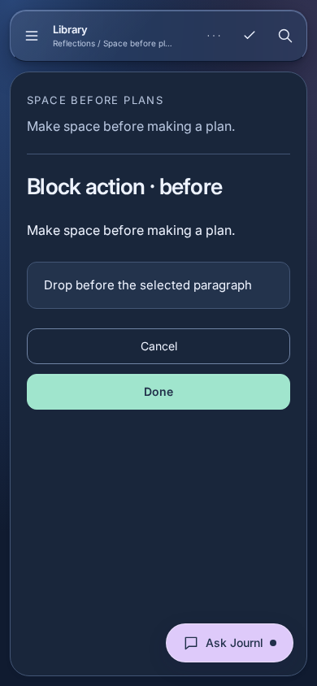
SHA256 6a0e69776d1cb73054823daec4b0f876218faea9f4f0c270503a38716de5d393
Block action · inside
block-action-insideActions and implementation pointers
+ New page · Journal · Explore · All pages · ⌄ · Reflections · › · Reading · Cancel · Done · Ask Journl · Today’s Journal · Close · Instant · Thinking
apps/web/src/components/editor/document-toolbar.tsxpackages/better-editor/src/engine/suggestions.tspackages/better-editor/src/ui/context-menu.tsx

SHA256 ad7e7d81cc4ab8cacc972f094eaad0c57881b009da4d50de75da173beed18634

SHA256 4c84a9f688904acb764a1f6ada1be5ca3d6d52f7c83ce4b04b49a03d866a2231

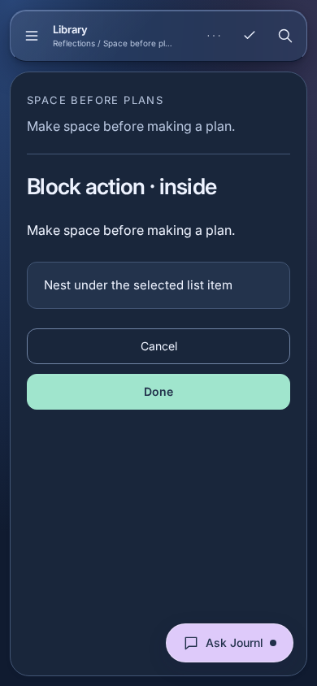
SHA256 0cea017238f3757273e35d5692ca60dd671a5253066f657cb7a3e66117f4874a

SHA256 0d20bea98617307d4f1f3bde53ccf458ab32bb39a5f204e6b99c1f5a237dfdbe
Block action · invalid
block-action-invalidActions and implementation pointers
+ New page · Journal · Explore · All pages · ⌄ · Reflections · › · Reading · Cancel · Done · Ask Journl · Today’s Journal · Close · Instant · Thinking
apps/web/src/components/editor/document-toolbar.tsxpackages/better-editor/src/engine/suggestions.tspackages/better-editor/src/ui/context-menu.tsx

SHA256 0b40f22aae13f511818aabedeb698da07d8b0f9ee53325d2b916a7feff6409b8

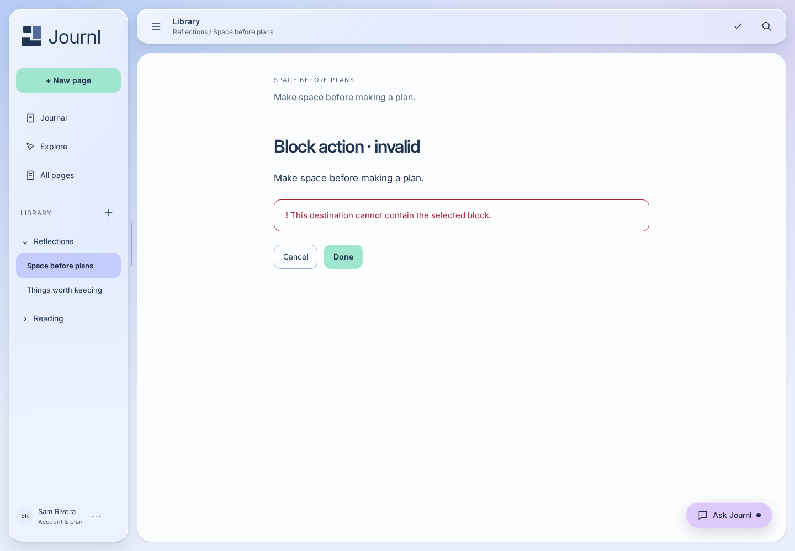
SHA256 ccda71c4c36fde3620b41dd4996b41789f9ba6a1ce64caa20af1973023a1722c

SHA256 f908a300d0c836ad1e16f5038bb03c7160529f446b5f90cf72bf8f2f184c0a9c

SHA256 0d9644a95e7ba28c9c50014829cbc75699abed253353cf97a022844300e85f58
Block action · cancel
block-action-cancelActions and implementation pointers
+ New page · Journal · Explore · All pages · ⌄ · Reflections · › · Reading · Cancel · Done · Ask Journl · Today’s Journal · Close · Instant · Thinking
apps/web/src/components/editor/document-toolbar.tsxpackages/better-editor/src/engine/suggestions.tspackages/better-editor/src/ui/context-menu.tsx

SHA256 74afc955cecaa6cad9c79d76c416207314accf3fe49955e52e792239c1496a33

SHA256 9771059db82292a85890c45d4b83d5b9c46096e712a2d44d9fca18015f3487f3

SHA256 a283cc4bb5d4044a4aff3a95d4c331e5fb013cd43b7198064d934f4f5f3542e2

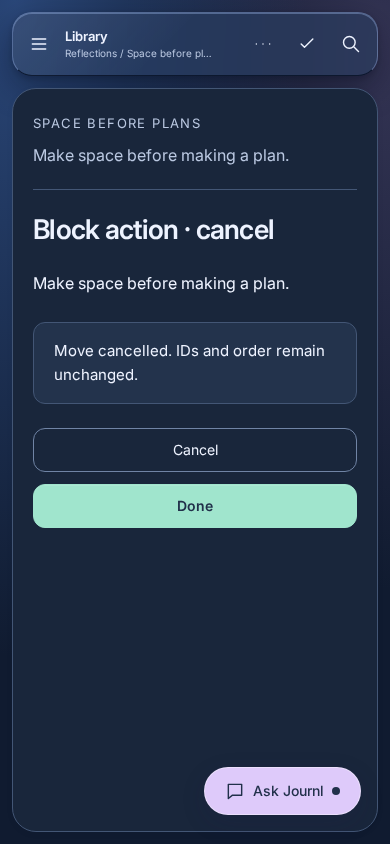
SHA256 98c9b7215eb029a6690b21c87f5e00430901f234106901e08fe4b284482242e8
Block action · duplicate
block-action-duplicateActions and implementation pointers
+ New page · Journal · Explore · All pages · ⌄ · Reflections · › · Reading · Cancel · Done · Ask Journl · Today’s Journal · Close · Instant · Thinking
apps/web/src/components/editor/document-toolbar.tsxpackages/better-editor/src/engine/suggestions.tspackages/better-editor/src/ui/context-menu.tsx

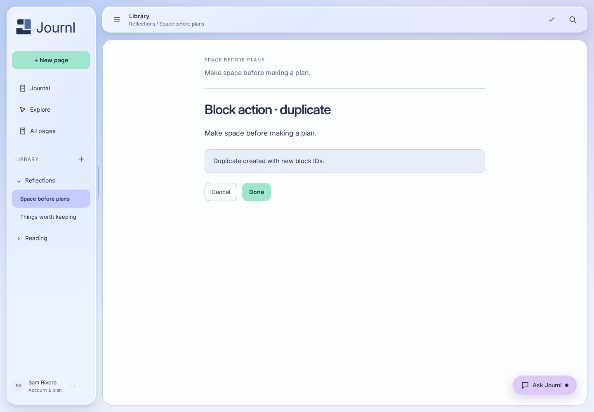
SHA256 fd88a8da5bcd793db02fef2ebf5fc391a6c6d03ea62b32a6bf5888dcf70a71ab

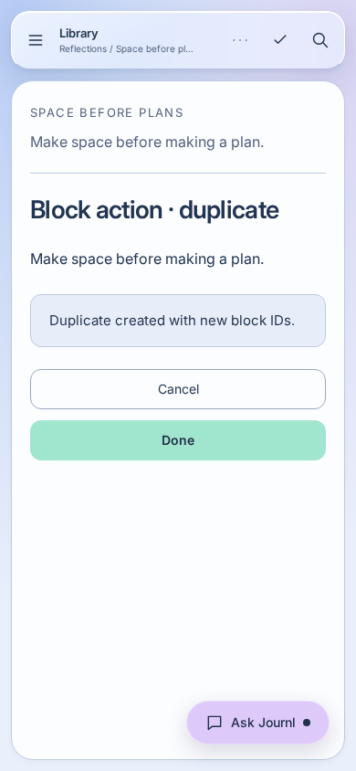
SHA256 22be74f4d9154fd7b6208c41255e0eef72d7a42c7f79119141280c384a27cc75

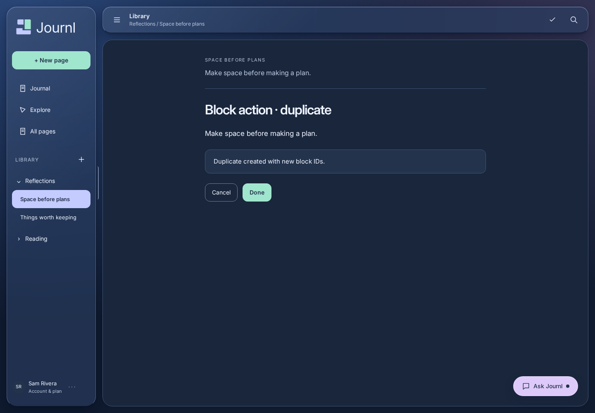
SHA256 6db6de8b69119e8df673130f8d807715fa752198f5a8f2a91a3b05e41d0218d7

SHA256 5ab756121c6b5e9b7e61080f2c5e9d37a470c5b9f28b829036a8f6ca3c129168